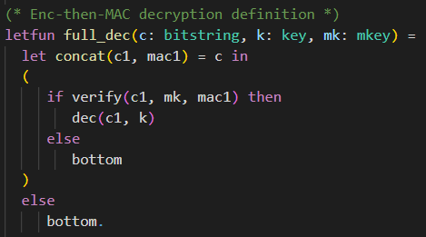

üí° Challenges
Enc-and-Mac
Try to prove Enc-and-Mac is IND-CPA (which it is NOT).
Try to understand why proof fails in CryptoVerif.
In the first challenge we will consider the Enc-and-Mac construction. The assumptions on the cryptographic primitives are the same as in the chapter First Proof. The symmetric encryption is IND-CPA secure and the MAC is SUF-CMA secure.
Try to prove that Enc-and-Mac is IND-CPA secure using CryptoVerif. As you may already know that cannot be proven as attacks exist.
In this challenge you should inspect CryptoVerif´s output and understand why the sequence of games failed.
Note that CryptoVerif cannot find attacks. However, you should use CryptoVerif´s output to derive a concrete attack on the Enc-and-Mac construction.

The Enc-and-Mac construction works as follows.
- Encrypt the plaintext resulting in a ciphertext.
- Compute the Mac over the plaintext.
- Concatenate the ciphertext and this Mac.
You can see a visualization of this construction on the right-hand side.
❓ Don´t know how to proceed? Click here.
The input file is almost the same as enc-then-MAC-IND-CPA.ocv discussed in the chapter First Proof.
For this task you need to rewrite the defintion of full_enc to match Enc-and-Mac instead of Enc-then-Mac.
Solution:
- rewritten definition of Enc-and-Mac (should be super easy that students understand themselves)
- explanation what the problem is (cannot merge branches in Game 7)
Show solution
Solution: Definition Enc-and-Mac

Explanation: How the proof fails
Insert Explanation how proof fails
Emphasize that CryptoVerif cannot prove insecurity of protocols. derive attack on Enc-and-Mac using failed proof
Enc-then-Mac IND-CCA2
Prove Enc-then-Mac is IND-CCA2
Hints:
1.1 consider the differences between IND-CPA and IND-CCA2
1.2 told CryptoVerif how Enc-then-Mac is decrypted?
1.3 added oracle for decryption?
1.4 remember that if branches cannot be merged
2.1 Remember to exclude trivial win
2.2 tables syntax:
table tbl_name(type_to_store).
insert tbl_name(obj_to_insert);
get tbl_name(=obj_to_search) in do_true else do_false
3 run oracles simultaneous:
(run Oracle1(a,b) | run Oracle2(c,d,e))
Solution:
- Add full_dec()
- Add Dec oracle
- modify Enc and Dec oracle to exclude trivial win (using table of ciphertexts)
- run oracles simultaneous
Show solution
Solution: Decryption Enc-then-Mac

Solution: Enc and Dec oracle (excluding trivial win)


Solution: Initial Game